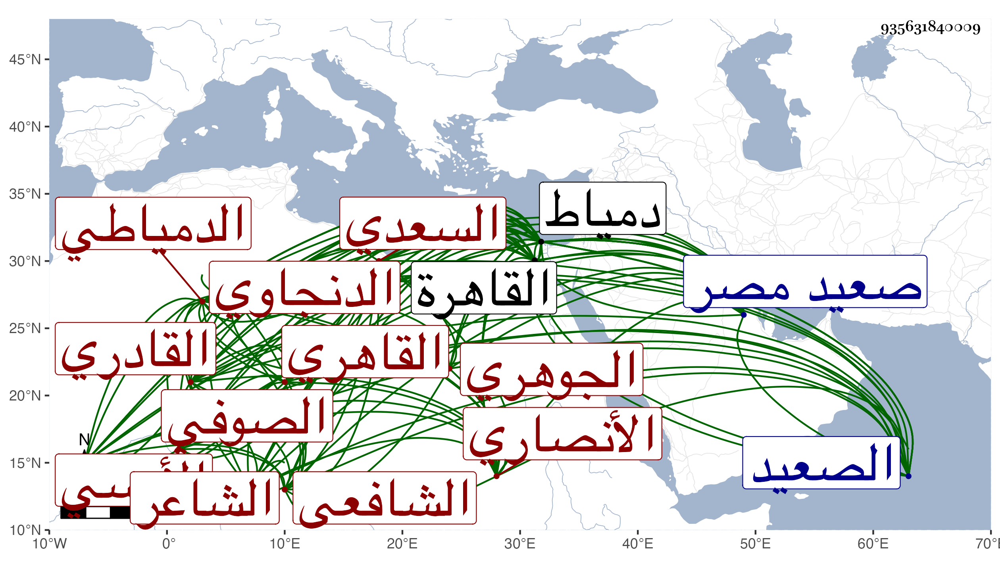

0902Sakhawi.DawLamic.ITO20230111-ara1.EIS1600.935631840009
Biography ID: 935631840009
443
محمد بن أبي بكر بن عمر بن عمران بن نجيب بن عامر الشمس أبو الفضل الأنصاري الأوسي السعدي المعاذي الدنجاوي ثم القاهري الدمياطي الشافعي الصوفي القادري الجوهري الشاعر ويعرف بالقادري . ولد في سنة تسع عشرة وثمانمائة تقريبا وجزم في نظمه بأنه في سنة عشرين وحينئذ فمن قال خمس عشرة فقد أبعد بدنجية قرب دمياط ثم نقله عمه إلى بهنسا من صعيد مصر فقرأ بها القرآن عند البهاء بن الجمال وتلاه عليه لأبي عمرو وحفظ الشاطبية ثم انتقل قبل إكماله العشرين مع عمه أيضا إلى القاهرة فقطنها واشتغل يسيرا ولازم المناوي وغيره ، وحج في سنة أربع وثلاثين وزار وسافر إلى الصعيد وغيرها وتردد لدمياط وقطنها مرارا وناب في القضاء بها عن الأشموني أيام الزيني زكريا ، وعني بالأدب فلم يزل ينظم حتى جاد نظمه وغاص في بحاره عن المعاني الحسنة وأتى بالقصائد الجيدة وخمس البردة ومدح كثيرا من الرؤساء كالحسام بن حريز ، وله في شيخه المناوي غرر المدائح بل امتدح شيخنا بقصيدة أثبت غالبها في الجواهر وكذا امتدحني بأبيات وناظر الجيش في سنة إحدى وتسعين فيما بعدها بقصائد عند ختومه بل مدح الكمال الطويل وغيره مما الحامل له على أكثره وعلى القضاء مزيد الحاجة ولذا نزله تغري بردى الاستادار في صوفية سعيد السعداء ، وهو ممن طارح الشهاب الحجازي وابن صالح والمنصوري فمن دونهم ، وكتب الخط الحسن من غير شيخ فيه ، وتكسب في سوق الجوهريين وقتا ، لقيته بدمياط وغيرها وقصدني بالزيارة ، وهو إنسان حسن متواضع جيد الذكاء والفهم بارع في النظم مشارك في العربية ، بل قال البقاعي أنه لو اشتغل فيها لفاق في الأدب ومما كتبته عنه بدمياط :
| يا من تنزه عن شبيه ذاته | وصفاته جلت عن التشبيه |
| أمنن علي بفيض رزق واسع | واجعل لمنهاج التقي تنبيه |
وقوله :
| يا من أحاط بكل شيئ علمه | والخلق جمعا تحت قهر قضائه |
| إرحم مسيئا محسنا بك ظنه | يرجوك معتمدا بحسن رجائه |
وعندي من نظمه أشياء وكاد الانفراد عن شعراء وقته من مدة .
